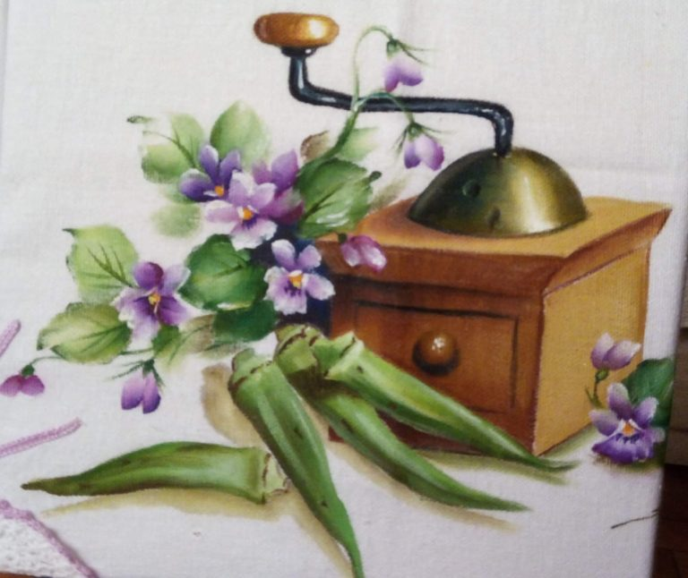
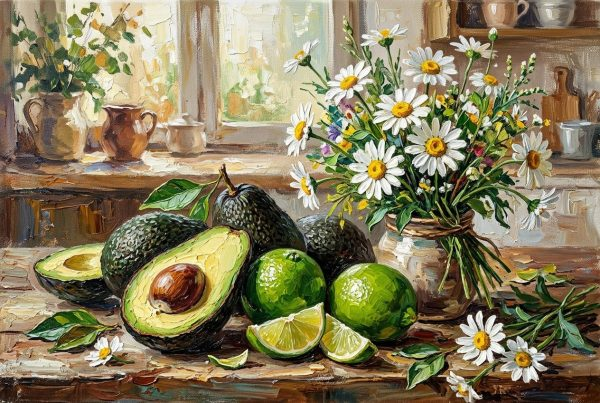

Atelier à Porto Alegre · R. João Guimarães, 31 — Rio Branco
Catalogue › Moulin à café et violettes

Œuvre de Silvia Porto
N° 51 · Moulin à café et violettes
Moulin à café et violettes est une peinture originale à l'acrylique de l'artiste Silvia Porto, de Porto Alegre (Brésil).
Une nature morte aux couleurs vives, parfaite pour les cuisines et salles à manger.
Commandez votre tableau peint à la main par Silvia, à l'acrylique sur toile, à la taille de votre choix (délai minimum de 15 jours ouvrés).
Pas de vente en ligne : Silvia confirme avec vous la taille, la finition, le prix et le délai avant de commencer à peindre.
Contact direct avec Silvia : (51) 99283-8195 · silviabeust1@gmail.com
Essayez
Voyez le tableau sur votre mur
Choisissez une pièce ou envoyez la photo de votre mur pour voir la bonne taille.
Œuvres similaires
 Pastèque et raisinsCollection Studioai
Pastèque et raisinsCollection Studioai Poires et grenadesCollection Studioai
Poires et grenadesCollection Studioai Panier d'orangesCollection Studioai
Panier d'orangesCollection Studioai Café, croissant et fraisesCollection Studioai
Café, croissant et fraisesCollection Studioai Pommes vertes et bouilloire en cuivreCollection Studioai
Pommes vertes et bouilloire en cuivreCollection Studioai Fruits tropicauxCollection Studioai
Fruits tropicauxCollection Studioai Citronnade à la mentheCollection Studioai
Citronnade à la mentheCollection Studioai
Avocats, citrons et margueritesCollection Studioai© 2026 Silvia Porto — Arts plastiques · Porto Alegre, RSCommandes · WhatsApp (51) 99283-8195 · silviabeust1@gmail.comDéveloppé par Diego Kasper - +Tableaux